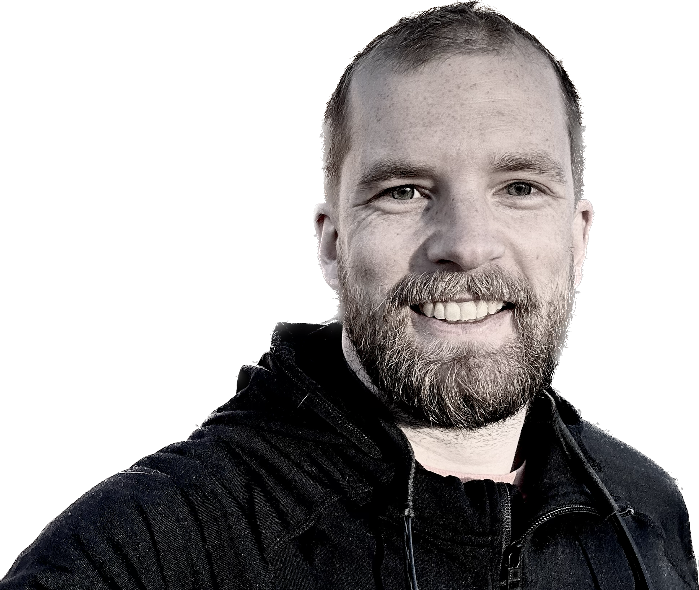

Design, strategy, and product for the outdoors. Building tools that work when it matters most.
A deployable network of remote snow sensors with integrated AI tools, built to close the data gap in avalanche forecasting and snow science.
A proof-of-concept feature design for AllTrails, exploring how to turn 65 million existing users into contributors to trail accuracy and data integrity.
A GPS route-sharing tool built for search and rescue teams. Push an egress route to a lost hiker's phone as a simple, zero-install link.
End-to-end design of a public safety communication experience for the Mount Washington Avalanche Center, built to change behavior before people reach the mountain.
A native iOS app and home screen widget that surfaces live avalanche danger ratings from the National Avalanche Center, built around the official NAPADS visual language.

Patrick Scanlan is a product designer with a background spanning human factors engineering, UX research, and strategic design. He currently works as a contractor at Apple across the end-to-end product design process, and holds a graduate degree from Carnegie Mellon's Integrated Innovation Institute.
Before working in tech, Patrick spent a decade as a mountain guide, federal avalanche forecaster, and search and rescue leader in North America's most demanding mountain terrain. That experience is not incidental to the design work. A decade of making consequential decisions in complex, dynamic environments with incomplete information is a direct education in what good design actually requires of the people using it.
The through line across his career is a focus on the gap between what products promise and what they deliver under real conditions: products built by talented engineering teams that don't account for the environments, user states, and pressures their users actually face. Closing that gap, through sharper research, clearer framing, and design that holds up when it matters, is the work.